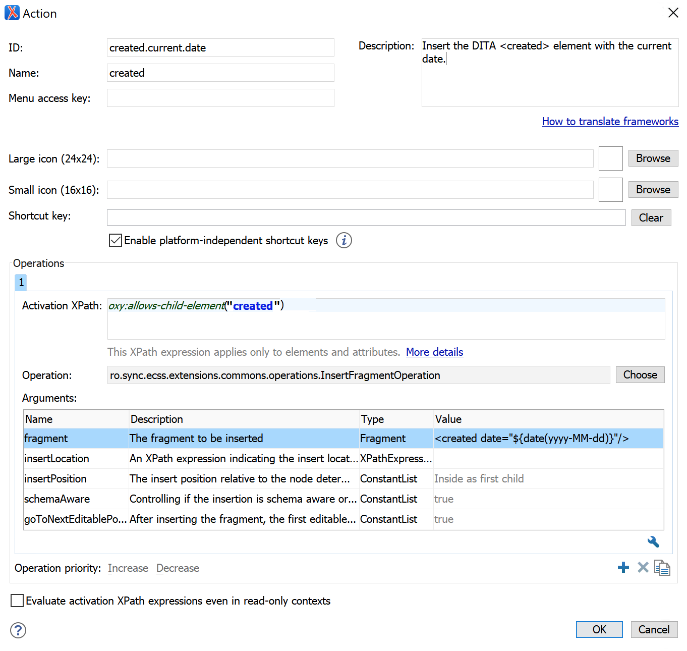

Adding a Custom Author Action to the Content Completion Window
Let's say you are editing XML documents belonging to a certain vocabulary (like DITA) for which there is a framework configuration available. The content completion window appears in the Author visual editing mode when you press the ENTER key and usually presents the set of XML elements allowed at the caret position. The same list of elements is present in the Elements view. These elements are usually proposed based on the DTD, XML or Relax NG vocabulary used to validate the XML document.
- Disallow a certain set of elements to appear in the content completion window.
- Declare a set of required child elements which should be inserted automatically when the parent element is inserted.
- Declare a set of required attributes which should be inserted when a certain element is inserted.
- You want to add a new item in the content completion filter which triggers a complex action. For example when the item is selected you show a dialog and ask the end user from some data, then insert a custom XML fragment based on that data the end user filled out.
- You want to replace an existing item in the content completion window with an item with the same name but which again triggers a more complex action.
<created date="2020-03-26"/>
-
Follow the steps 1,3, 4 and 5 listed in this older blog post to create an extension of the DITA framework: Customizing the DITA Visual Editing Experience.
-
In the Document Type Association preferences page, edit the DITA framework extension you just created. Go to the Author->Actions tab and create a new action with the ID
created.current.date. Use the predefined InsertFragmentOperation to insert a small XML fragment. The XML fragment uses an editor variable which will be expanded to the current date. There are plenty of other editor variables to choose from.The custom action definition would look like this:

There are plenty of other pre-defined operations which can be used from an Author action. For example a Javascript-based operation, there are some other examples of what such operations can do in a separate GitHub project.
-
Go to the Author->Content Completion tab, find the new action in the Available Actions list and add it to the Current actions list. You will be able to add it both in the content completion list and the Elements view. In the Filter - Remove content completion items list add an entry for
createdbecause we want to remove the original item and replace it with the action. - Save all your changes by using the Ok button both in the document type configuration dialog and in the Preferences dialog.
-
When editing a DITA topic in the Author visual editing mode you can press ENTER to show the content completion window, choose
createdand your custom Author action will be called instead of the original item.